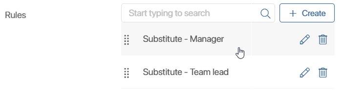

You can work with substitutions in Administration > Company > Substitutions.
Here a system administrator can view, customize, edit, and delete substitutions. They can also configure reassignment of the absent person’s tasks and set the rules by which they will be distributed.
Types of substitutions
There are three types of substitutions in BRIX. They differ in the set of rights that can be granted. When selecting the type of substitution, we recommend you to follow the organizational chart and internal rules of the company:

- Inform. Shows users that an employee is absent. It is not necessary to specify a substitute for this type. For example, when current issues can wait or there is no one to delegate tasks to.
If a substitute is specified, they will be able to solve current issues, but will not have access to tasks, apps, or documents of the absent employee. - Reassign tasks. If this type is selected, the informing function is retained. In addition, the substitute will get all new tasks that users assign in the system during the substitution period, as well as tasks and notifications from business processes. To delegate to the substitute the tasks assigned before the substitution start date, use the Reassign active tasks option.
|
- Grant all access permissions. This type of substitution includes both previous types. In addition, the substitute temporarily gets access to the system objects available to the absent employee: documents, files, workspaces, and apps. They will also be able to see the absent employee's events if they receive a notification or task with a link to the event. The exception is the My department workspace, access to which is not shared.
Please note that even if this type of substitution is selected, the employee who substitutes the system administrator but is not a member of the Administrators group will not have access to the Administration workspace, workspace and app settings, etc.
|
If the front_enable_substitution_rules feature flag is enabled, when creating a substitution, you will be able to add rules for reassigning tasks and distribute them among several substitutes. For example, if a sales rep goes on vacation, their tasks for signing invoices can be reassigned to the team lead, and requests from new customers can be reassigned to another sales rep.
Create a substitution
- Go to Administration > Company > Substitutions and click + Substitutions in the upper right corner of the page.
- Fill out the form:
- Type. Select the type of substitution depending on what rights you want to grant to the substitute.
- Absent user*. Specify the employee who will be absent.
- Substitute*. Specify the substitute user. It is not necessary to specify a substitute for the Inform type.
- Start date* and End date*. Specify the start and end time of the substitution period. The substitution period is unlimited and can last for one hour or more than a year, for example, if the employee is on a long business trip.
Customize the task reassignment options. They are available if you have selected the Reassign tasks or Grant all access permissions type: - Reassign active tasks. Enable this option to assign to the substitute the tasks of an absent employee that were assigned to them before the start date of the substitution. Tasks without a specified due date or with a due date later than the substitution end date will not be reassigned.
- Reassign tasks when substitution is finished. Select Yes to have all tasks reassigned to the absent user at the end of the substitution period.
- Rules. If you need to distribute tasks among several employees, create rules and specify in them the substitutes and conditions for reassigning tasks.
начало внимание
Creating rules for task reassignment is available if the front_enable_substitution_rules feature flag is enabled. For SaaS version, please contact your manager. For On-Premises version, read more about this in the Modify BRIX Enterprise parameters and Modify BRIX Standard parameters articles.
конец внимание
Create a task reassignment rule
- Next to the Rules field, click + Create.
- In the window that opens, fill in the fields and save the data:
- Name*. Specify the name of the rule.
- Rule*. Specify the parameters by which tasks will be selected for reassignment. For example, specify a keyword in the task name.
- Substitute*. Select a substitute user who will receive tasks that match the specified parameters.
Unassigned tasks will go to the substitute that is specified on the substitution form.
- Customize the priority of rule execution if you have several rules. To do this, specify the sequence in the list by dragging and dropping the rules.

Please note that if you change the executor on the task page manually, the added substitution rules will not be applied.
- Click Save.
Customize absence notification
By default, users see information about their colleague's absence only from the moment the substitution period has already started. You can set up a notification in advance so that they have time to solve urgent issues with the right employee.
In this case, you specify how many days in advance the information about the upcoming absence should appear in the system.
To do this, open the page with the list of substitutions and click Settings in the upper right corner.
In the opened window specify the required number of days.
Please note, this option applies to all upcoming substitutions.
View a substitution
In Administration > Substitutions, a folder tree has been configured, which makes it convenient to view and find the required substitutions:
- Active. All currently active substitutions.
- Upcoming. All planned but not yet started substitutions.
- Archived. All completed and interrupted substitutions.
- All. All created substitutions.
You can view all information about a substitution by opening its page. To do this, select the substitution in the list and click its name.
Edit or delete a substitution
You can edit an active or upcoming substitution. To do this, open its page and click Edit.
Please note that if the substitution has not yet started, you can change the users, type of substitution, start and end time, as well as the substitution rules.
For substitutions that have already started, you can only change the date or end time.
On the edit form you can use the buttons:
- Delete. Deletes a substitution that has not yet started.
- Interrupt. Interrupts the current substitution.
A deleted substitution cannot be restored. To notify employees and grant the rights of the absent user, create the substitution again.
Found a typo? Select it and press Ctrl+Enter to send us feedback